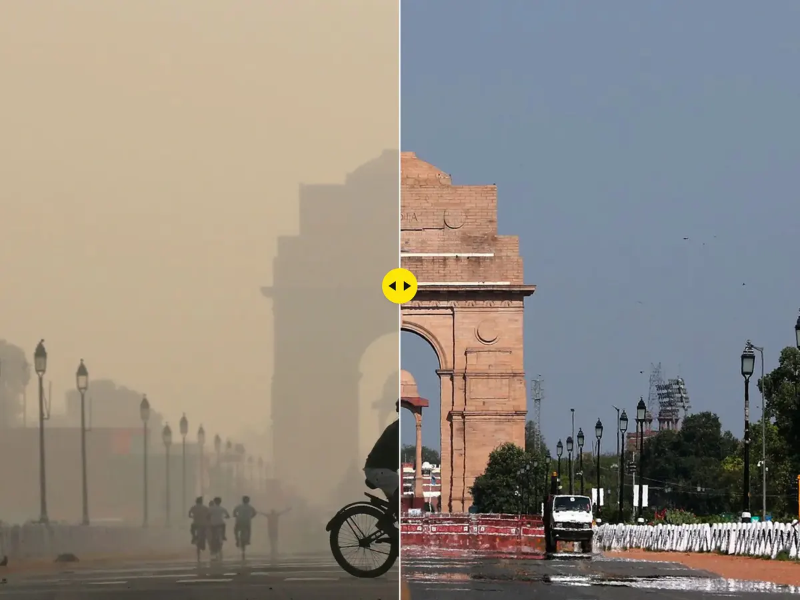
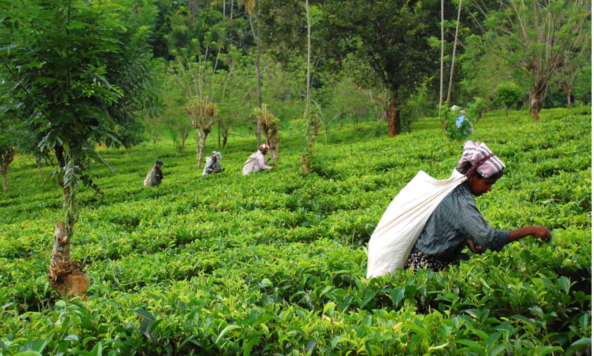

Introduction
As an Indian-America, I spent my childhood going to India every year to visit family. I had noticed the air quality seem to get worse over the years. For the completion of my Ethics & Bias in Environmental Data Science course, I decided to investigate potential areas of bias in data collected and presented on air pollution in India.
Background
In 2021, the air quality in India exceeded the World Health Organization’s (WHO) health standard by over ten times. Access to clean air was recognized as a human right in July 2022, and many countries, including India, had adopted legislation to regulate air pollution long before this. So why is India’s air quality still as poor as it is? Is it due to reasons out of human control, such as climate effects trapping in air pollution, or is it a discrepancy in efforts to mitigate the problem (or both)? I will be exploring the conditions that perpetuate poor air quality in this region, data collection/access, and improvement efforts through an ethics and bias lens. This evaluation can lend itself to support the sustainable growth of the population and industrialization in this area.

Air quality is measured by the concentration of particulate matter suspended in the air. A commonly used metric to report this is PM2.5, which is used to calculate the Air Quality Index. India’s relatively poor air quality can be attributed to poor farming practices, reliance on coal, high population density, and lack of policy fit for the current demand. Consequences of bad air quality include lung disease, increased risk of other diseases or death, and the occasional order to stay home. One quarter of all deaths in 2019 due to air pollution%20worldwide%20in%202019.) were in India, reflecting the disproportionate amount of air pollution in India compared to other regions.
Air Quality in India
There are two legislations regarding air quality in India, the Air (Prevention and Control of Pollution) Act of 1981, amended in 1987, and the Environmental Protection Act of 1986. Both of these are aimed at defining and attempting to reduce air pollution in the overarching goal of protecting the environment. These legislations, while well intentioned, are out of date and do not reflect the current levels of air pollution that the government of India could make a more serious effort of reducing. Lack of enforcement and stalemates between the state and federal government has allowed for practices such a burning coal and old crop fields that contributes greatly to the air pollution in India.
The latter has been a topic of tension of India in recent years as air quality has declined more year after year. India is one of the largest global agricultural producers, so emissions from this sector are inevitable. However, the amount of emissions being released from agricultural practices could be reduced greatly. Every fall, farmers burn leftover crop residue to make space for the incoming crop season which leads to worse air quality from October to December. There has not traditionally been much government oversight over this process, but in recent years there have been more efforts to reduce emissions. These efforts from the boards that enforce the legislations mentioned above have relatively new programs, such as the National Clean Air Program, to provide farmers with new equipment to sustainably remove their crops rather than burn them. Since there is not a lot of updated infrastructure to support these types of programs, it may take years to make a difference in agricultural emissions. In the future, policy will need to follow through with the best interest of the public over profit to slowly increase air quality in response to its current state, not its state when these programs were founded.

Data Gathering and Access
Without a full grasp of the problem at hand proper adjustments to current policy will be difficult to make. Using air quality data can help decision makers determine sources of air pollution. There are two federal air quality monitor types in India, both regulated by the the Central Pollution Control Board (CPCB). The first being of industrial emissions began in 2104 and is conducted through the Online Continuous Emissions/Effluents Monitoring Systems (OCEMS). As of 2021, there are 3,700 monitors across industrial regions around India. A concern with this data is that the industries being monitored are the ones commissioning and installing these monitors. This means there is likely missing data and underreported emissions, and less pressure on the same industries that are responsible for air pollution to reduce their emissions.
The second monitoring system in India is the Continuous Ambient Air Quality Monitoring Systems (CAAQMS) which inform the official AQI measurements for the country. There are 209 of these monitors. There is also much more monitoring of cities and industrial areas. This presents a divide in available data and a potential issue when creating projections and necessary efforts to mitigate air pollution. This monitoring system is not effective at representing the population, as in 2017 approximately 66% of the population lived in rural areas while these monitors are placed in industrial areas. Misrepresentation in data often leads to misrepresentation in government response, and in this case this could lead to less attention to reducing air pollution in rural regions since less is known about their conditions.
Public data access is an important part of creating diverse solutions to problems at this scale. On IQair.com, all the contributors of air quality data are listed, and 24 out of the 35 sources are listed as anonymous. This provides a data access issue, in that there is not full transparency in which groups are collecting air quality data and where to view it. The other eleven sources are government, corporate, and individual bodies. Not all of these contributors have access portals to view the data they collect. In addition to this, CAAQMS data regarding industrial emissions and pollution are not available to the public. This is where data justice comes into play. Is this lack of public access to data only one part in a larger dysfunctional system? An improvement in public access to data could be in the best interest of the public, allowing more than only the government to employ solutions to poor air quality.
Current Efforts
Artificial intelligence projects have been approved to collect data across India on air quality. These projects will mainly monitor emissions from vehicles and levels of PM2.5 to help inform politicians in decision making. This artificial intelligence is aimed to help determine which areas may need more help than others, and could be used for accountability if the data is open access. These monitoring techniques can be useful to help regulate emissions if the information is used as intended. Artificial intelligence can be a helpful tool, but an invasive one. As seen in Coded Bias, artificial intelligence is not a silver bullet for the issues mentioned above with data quality and access. Biases of the developers of artificial intelligence often make it into their models, so this should be kept in mind when proceeding with the use of artificial intelligence.
Along with artificial intelligence, there are other sectors working to improve air quality in India. The Nature Conservancy (TNC) in India is working with farmers to use new technologies rather than burn their old crops. However, being able to give up current methods for a more expensive alternative is not an option, or priority, for every farmer. This is where policy lacks and where groups like TNC come into play. Many of the current policies do not have the funding to provide farmers with new, more sustainable equipment, so farmers are left with only guidance on how they should change their practices, but no support to do so. One area of improvement could be the collaboration between groups like TNC and the government to optimize these solutions at the greatest scale possible. This type of collaboration could lay a blueprint for a future of sustainable farming practices.
With a growing population and outdated policies, India has an air quality issue on their hands. As a country, some efforts have been made to address this problem, but there is room for improvement via collaboration, accountability, and innovation. How decisions are made and how data is accessed and distributed must change if air quality is going to improve in this region. There is opportunity for improvement in these areas: artificial intelligence can be used to help improve the understanding of air quality conditions, but collaboration between policy makers, farmers, scientists, and civilians will produce better results than solely relying on efforts by the TNC or artificial intelligence.
References
- Ajay Thakur, et al. “Clean Air Related Laws in India.” IPleaders, 21 Feb. 2017, https://blog.ipleaders.in/clean-air-related-laws-in-india/#:~:text=The%20two%20main%20laws%20that,provisions%20under%20these%20two%20acts.
- Bhowmick, Nilanjana. “The Burning Problem.” The Nature Conservancy, 4 Nov. 2022, https://www.nature.org/en-us/magazine/magazine-articles/india-agriculture/.
- “Central Pollution Control Board.” CPCB, https://cpcb.nic.in/about-namp/.
- “Government to Employ Drones, AI to Check Air Quality and Fight Pollution.” Business Insider, 11 Nov. 2022, https://www.businessinsider.in/india/news/government-to-employ-drones-ai-to-check-air-quality-and-fight-pollution/articleshow/95443802.cms.
- “India Air Quality Index (AQI) and Air Pollution Information.” IQAir, https://www.iqair.com/us/india.
- “India - Food and Agriculture Value Chain.” International Trade Administration | Trade.gov, https://www.trade.gov/country-commercial-guides/india-food-and-agriculture-value-chain.
- Kanwal, Sanyukta. “India - Population by Region 2017-2022.” Statista, 16 Oct. 2020, https://www.statista.com/statistics/1012239/india-population-by-region/.
- “Ministry of Coal, Goi.” Ministry of Coal, GOI, https://coal.nic.in/en/major-statistics/coal-indian-energy-choice#:~:text=%E0%A4%95%E0%A5%8B%E0%A4%AF%E0%A4%B2%E0%A4%BE%20%E0%A4%AE%E0%A4%82%E0%A4%A4%E0%A5%8D%E0%A4%B0%E0%A4%BE%E0%A4%B2%E0%A4%AF%20Ministry%20of%20Coal&text=Coal%20is%20the%20most%20important,of%20the%20country%27s%20energy%20need.
- “State of Global Air.” Global Health Impacts of Air Pollution | State of Global Air, https://www.stateofglobalair.org/health/global#:~:text=Millions%20of%20Deaths,-Air%20pollution%20is&text=Air%20pollution%20accounts%20for%20more,7.49%20million)%20worldwide%20in%202019.
- Sutaria, Chetan Bhattacharji and Ronak. “Tackling Industrial Pollution in India: Where Is the Data?” ORF, 8 Feb. 2021, https://www.orfonline.org/research/tackling-industrial-pollution-in-india-where-is-the-data/.
- Tiseo, Ian, and Jun 17. “India: Average Annual Deaths from Air Pollution 2019.” Statista, 17 June 2022, https://www.statista.com/statistics/935666/india-average-annual-deaths-from-air-pollution/.
- “UN General Assembly Declares Access to Clean and Healthy Environment a Universal Human Right | UN News.” United Nations, United Nations, https://news.un.org/en/story/2022/07/1123482.
- Yasir, Sameer, and Mike Ives. “Air Quality in India’s Capital Is Dreadfully Bad. Again.” The New York Times, The New York Times, 4 Nov. 2022, https://www.nytimes.com/2022/11/04/world/asia/india-air-pollution-sickness.html#:~:text=Is%20Dreadfully%20Bad.-,Again.,traffic%20restrictions%20and%20political%20infighting.
Citation
@online{favre2022,
author = {Favre, Kiran},
title = {An {Evaluation} of {Air} {Pollution} {In} {India}},
date = {2022-12-03},
url = {https://kiranfavre.github.io/posts/2023-03-15-03_ethics/},
langid = {en}
}